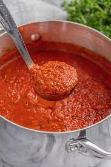

Ingredients
- 1 pound lean ground meat like beef, turkey, chicken or lamb
- 3 tablespoons olive oil
- 1 cup chopped onion
- 3 garlic cloves, minced (1 tablespoon)
- 2 tablespoons tomato paste
- 1/2 teaspoon dried oregano
- Pinch crushed red pepper flakes
- 1 cup water, broth or dry red wine
- 1 can crushed tomatoes
- Salt and black pepper
- Handful fresh basil leaves, plus more for serving
- 12 ounces dried spaghetti or favorite pasta shape
- 1/2 cup shredded parmesan cheese
Sauce
- Heat the oil in a large pot over medium-high heat Add the meat and cook until browned, about 8 minutes. As the meat cooks, use a wooden spoon to break it up into smaller crumbles.
- Add the onions and cook, stirring every once and a while, until softened, about 5 minutes
- Stir in the garlic, tomato paste, oregano, and red pepper flakes and cook, stirring continuously for about 1 minute.
- Pour in the water and use a wooden spoon to scrape up any bits of meat or onion stuck to the bottom of the pot. Stir in the tomatoes, 3/4 teaspoon of salt, and a generous pinch of black pepper. Bring the sauce to a low simmer. Cook, uncovered, at a low simmer for 25 minutes. As it cooks, stir and taste the sauce a few times so you can adjust the seasoning accordingly (see notes for suggestions).

Cook noodles
- About 15 minutes before the sauce finishes cooking, bring a large pot of salted water to the boil, and then cook pasta according to package directions, but check for doneness a minute or two before the suggested cooking time.
To finish
- Take the sauce off of the heat, and then stir in the basil. Toss in the cooked pasta, and then leave for a minute so that the pasta absorbs some of the sauce. Toss again, and then serve with parmesan sprinkled on top.

I picked this food becuase its my favorite food and its easy to make